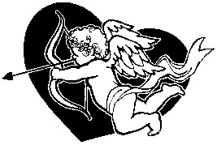
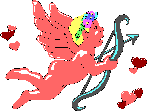
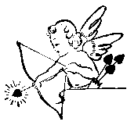

|
VALENTINES EDITION | MONDAY 8th FEBRUARY | ||||||||
| FIST OF LOVE | ||||||||||
| ||||||||||
| ||||||||||||||||||

This was one of those times - and in that city there was only one kind of time - when it was all wrong. You know it's trouble at the office when Spooky sloughs in through the door of a morning with an arrow in his throat. Then the air fills up with spikes. A brief glance through the Fist's front door gives it away, and almost loses me my eye to another arrow. It's a bad day in the crèche. The Cupids were a cold crew, all pink cheeks and business; somebody must 'a riled them real good to get them downtown in force. The print staff are mostly in a pile in front of the building, but we don't employ hundreds so there must be some bystanders in there too.
Comrade Myra, she of the coffee and the prison hairdo, has her shit together enough to gatslap a flying infant, but that just pisses the kid off and he gouges out her eye with a chubby pinkie. Two Heads Manny is good to go with a pair of irons, just before he disappears in a cloud of arrows it's like a pillow fight behind his desk. Feathers you wouldn't wear in your cap.
It was over in seconds, you'd think blood-bathing was going out of fashion. Enzo Cupid parks some bullets in my desks and invites me up to the Valley for a chat with the Don. So we rode, and in some style, Enzo's 1952 Packard convertible fit to the sky above and the road beneath, and I only spoiled the line by being over two foot tall. The hench-cherub next to me kept his bow pointed at my knee and stank of whisky.

Vito Cupid was old, and crazy, but his baby face was the original and he waxed so sentimental you could make candles out of it.
"I knew ya had guts, boy, I just didn't expect to see them so soon".
"Your boys didn't knock, Vito," I said easily, "you might take time out from potty-training to teach them manners". That earned me a stinging thump in the calves from Enzo.
"I thought," mused the putto from his couch, "that I might dictate an editorial".
"I hadn't noticed the sun shining out of your ass this morning".
"Sure it does. Ya see the tan on Enzo's nose?" He guffawed wheezily and limped towards me; Enzo cracked a smile like he'd crack a skull: coldly. "We Cupids are big on romantic love, we wanna share it with your readers, be like a big love-in, whaddya say?"
"You need me to press the big buttons on the typewriter?"
"Do I see you wearing a smile, hack?"
"They say love is blind, Vito," I grinned, "maybe you need to get a lady friend someday".
The cherub gave me his sweetest cotton-candy smile, one that would rot your teeth. "Got anyone in mind?"
"Sure". And the cigar was lit and in my mouth before I spoke again. "I know a blind lady, you'd make quite the match". Vito frowned and began to turn away, so I never did see the look in his eyes... 
"Justice".
The windows spat fire, and I took to the plush carpet like a champagne stain: I wasn't coming up until after the party. The Fist's Committee for Retribution had convened its meeting, within twenty seconds there were only the minutes to write up and the Cupid bodies to clear away.
"You shoulda just sent me flowers, Vito". I brushed feathers off the leather and went looking for coffee.